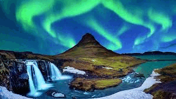
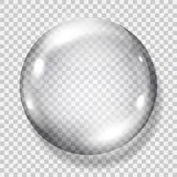

Logo
El format PNG és ideal per a imatges amb fons transparent, com logotips. Aquest format utilitza compressió sense pèrdues, la qual cosa significa que la qualitat de la imatge es manté alta, fins i tot després de múltiples edicions.

Paisatge
El format JPG és perfecte per a imatges amb molts colors i detalls, com paisatges. Aquest format utilitza compressió amb pèrdues, la qual cosa redueix la mida del fitxer mantenint una qualitat acceptable per a fotografies i imatges complexes.
Fotografia
El format JPG és també molt adequat per a fotografies, ja que permet una bona compressió amb una pèrdua mínima de qualitat. És ideal per a imatges amb molts colors i gradients suaus.
Imatge Transparent
El format PNG és el més adequat per a imatges amb fons transparent, com icones i gràfics. Aquest format manté la transparència i la qualitat de la imatge, fent-lo ideal per a elements gràfics que necessiten ser superposats sobre altres fons.
